Sampling background points with the options of using different geographical restrictions and sampling methods.
Usage
sample_background(
data,
x,
y,
n,
method = "random",
rlayer,
maskval = NULL,
calibarea = NULL,
rbias = NULL,
sp_name = NULL
)Arguments
- data
data.frame or tibble. Database with presences records, and coordinates
- x
character. Column name with spatial x coordinates
- y
character. Column name with spatial y coordinates
- n
integer. Number of background point to be sampled
- method
character. Background allocation method. The methods implemented are:
random: Random allocation of background points. Usage method = 'random'
thickening: Thickening background points is based on the Vollering et al. (2019) method. For this method, a buffer width must be defined that will be used around presences points. A buffer can be defined using the argument as method = c("thickening", width = 20000). Buffer width must be in m if raster (used in rlayer) has a longitude/latitude CRS, or map units in other cases. If a buffer width is not provided the function will use a width value equal to the mean of the pair-wise presence distances. If a width value is not provided, the argument must be used as method = 'thickening'.
biased: This method, similar to "thickening", sample background biased with the same bias of presences. However, the background points are sampled used a presences probability throughout the entire study area, and not restricting such bias within buffers as in the “thickening” approach. For using this method, it is necessary to provide a layer with presences bias in "rbias" argument (Phillips et al., 2009).
Usage method='thickening' or method = c("thickening", width = 20000). Default 'random'
- rlayer
SpatRaster used for sampling background points. It is best to use a layer with the same resolution and extent that environmental variables that will be used for modeling. If using maskval argument, this raster layer must contain the values to constrain sampling
- maskval
integer, character, or factor. Values of the raster layer used for constraining sampling of background points
- calibarea
SpatVect that delimits the calibration area used for a given species (see calib_area function).
- rbias
SpatRaster used for choosing background points using the bias method. A raster with bias data must be provided. It is recommended that rbias match resolution and extent of rlayer.
- sp_name
character. Species name for which the output will be used. If this argument is used, the first output column will have the species name. Default NULL.
References
Phillips, S. J., Dudík, M., Elith, J., Graham, C. H., Lehmann, A., Leathwick, J., & Ferrier, S. (2009). Sample selection bias and presence-only distribution models: Implications for background and pseudo-absence data. Ecological Applications, 19(1), 181-197.
Vollering, J., Halvorsen, R., Auestad, I., & Rydgren, K. (2019). Bunching up the background betters bias in species distribution models. Ecography, 42(10), 1717-1727. https://doi.org/10.1111/ecog.04503
Examples
# \donttest{
require(terra)
require(dplyr)
data(spp)
somevar <- system.file("external/somevar.tif", package = "flexsdm")
somevar <- terra::rast(somevar)
# Example for a single species
spp_pa <- spp %>% dplyr::filter(species == "sp3")
# Spatially structured partition
part <- part_sblock(
env_layer = somevar,
data = spp_pa,
x = "x",
y = "y",
pr_ab = "pr_ab",
min_res_mult = 100,
max_res_mult = 500,
num_grids = 30,
min_occ = 5,
n_part = 2
)
#> 4 rows were excluded from database because NAs were found
#> The following grid cell sizes will be tested:
#> 189000 | 215068.97 | 241137.93 | 267206.9 | 293275.86 | 319344.83 | 345413.79 | 371482.76 | 397551.72 | 423620.69 | 449689.66 | 475758.62 | 501827.59 | 527896.55 | 553965.52 | 580034.48 | 606103.45 | 632172.41 | 658241.38 | 684310.34 | 710379.31 | 736448.28 | 762517.24 | 788586.21 | 814655.17 | 840724.14 | 866793.1 | 892862.07 | 918931.03 | 945000
#> Creating basic raster mask...
#> Searching for the optimal grid size...
grid_env <- get_block(env_layer = somevar, best_grid = part$grid)
plot(grid_env)
## %######################################################%##
# #
#### Random background method ####
# #
## %######################################################%##
# Sample background points throughout study area with random sampling method
spp_p <- spp_pa %>% dplyr::filter(pr_ab == 1)
bg <-
sample_background(
data = spp_p,
x = "x",
y = "y",
n = 1000,
method = "random",
rlayer = grid_env,
sp_name = "sp3"
)
bg
#> # A tibble: 1,000 × 4
#> sp x y pr_ab
#> <chr> <dbl> <dbl> <dbl>
#> 1 sp3 80859. -348718. 0
#> 2 sp3 -119481. 199382. 0
#> 3 sp3 -68451. 76532. 0
#> 4 sp3 -351951. 297662. 0
#> 5 sp3 9039. -327928. 0
#> 6 sp3 -200751. 278762. 0
#> 7 sp3 -136491. 312782. 0
#> 8 sp3 156459. -186178. 0
#> 9 sp3 -106251. -233428. 0
#> 10 sp3 237729. -424318. 0
#> # ℹ 990 more rows
plot(grid_env)
points(bg[-1])
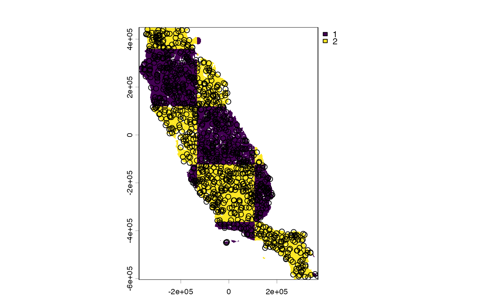
# Sample random background points constrained to a region with a give set of values
plot(grid_env)
sample_background(
data = spp_p,
x = "x",
y = "y",
n = 1000,
method = "random",
rlayer = grid_env,
maskval = 1
) %>% points()
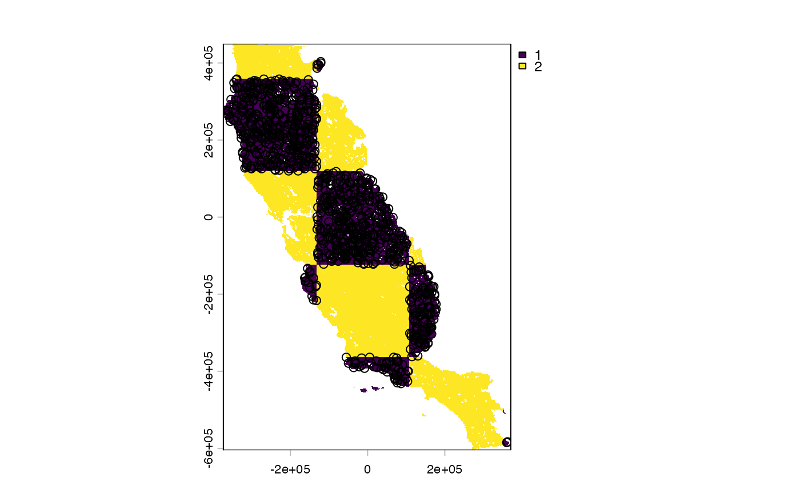
plot(grid_env)
sample_background(
data = spp_p,
x = "x",
y = "y",
n = 1000,
method = "random",
rlayer = grid_env,
maskval = 2
) %>% points()
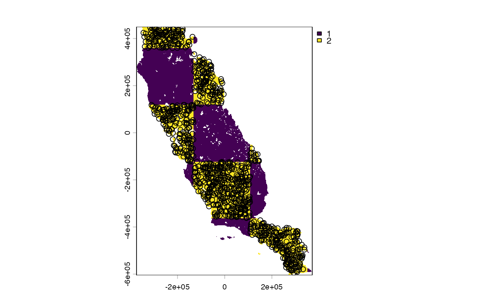
plot(grid_env)
sample_background(
data = spp_p,
x = "x",
y = "y",
n = 1000,
method = "random",
rlayer = grid_env,
maskval = c(1, 2)
) %>% points()
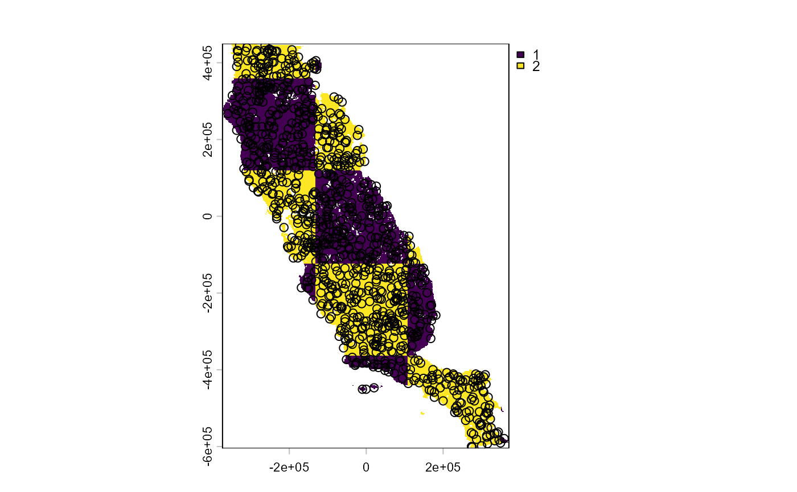
# Sample random background within a calibration area and constrained to a region
ca_ps1 <- calib_area(
data = spp_pa,
x = "x",
y = "y",
method = c("buffer", width = 50000),
crs = crs(somevar)
)
plot(grid_env)
plot(ca_ps1, add = TRUE)
points(spp_pa[-1], col = "blue", cex = 0.7, pch = 19)
sample_background(
data = spp_p,
x = "x",
y = "y",
n = 1000,
method = "random",
rlayer = grid_env,
maskval = 1,
calibarea = ca_ps1
) %>%
points(col = "red")
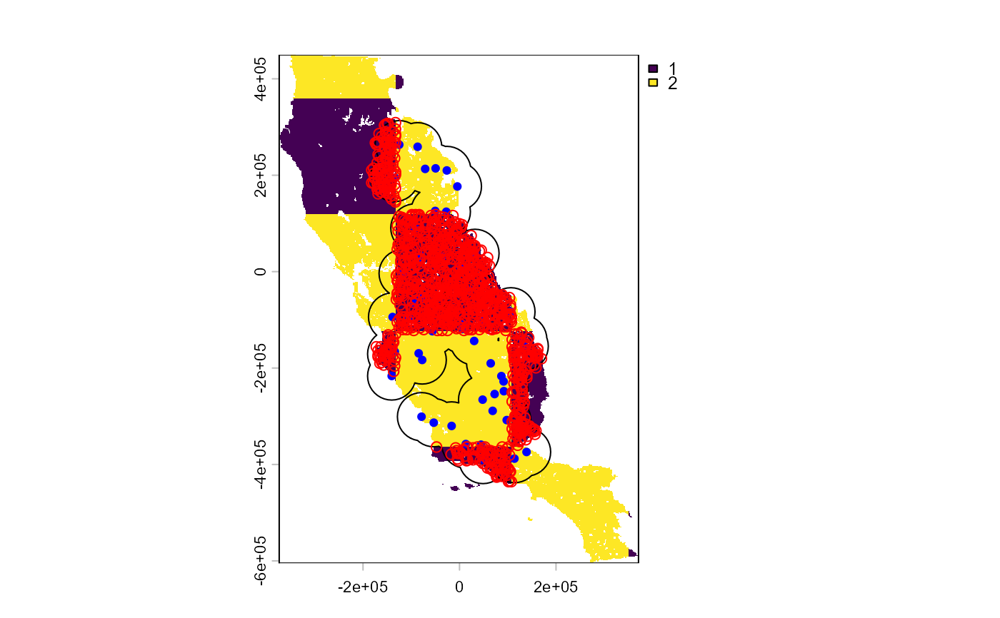
## %######################################################%##
# #
#### Thickening background method ####
# #
## %######################################################%##
# Thickening background without constraining them
spp_p # presences database of a species
#> # A tibble: 13 × 4
#> species x y pr_ab
#> <chr> <dbl> <dbl> <dbl>
#> 1 sp3 -26331. 209912. 1
#> 2 sp3 -134331. 195332. 1
#> 3 sp3 131079. -140548. 1
#> 4 sp3 -27411. 124322. 1
#> 5 sp3 106509. -83308. 1
#> 6 sp3 -86811. 259052. 1
#> 7 sp3 134049. -154588. 1
#> 8 sp3 -124881. 263372. 1
#> 9 sp3 -71151. 213152. 1
#> 10 sp3 2289. 9572. 1
#> 11 sp3 31989. 37922. 1
#> 12 sp3 -49551. 214232. 1
#> 13 sp3 -4461. 176702. 1
grid_env # The raster layer used for sampling background
#> class : SpatRaster
#> size : 558, 394, 1 (nrow, ncol, nlyr)
#> resolution : 1890, 1890 (x, y)
#> extent : -373685.8, 370974.2, -604813.3, 449806.7 (xmin, xmax, ymin, ymax)
#> coord. ref. : +proj=aea +lat_0=0 +lon_0=-120 +lat_1=34 +lat_2=40.5 +x_0=0 +y_0=-4000000 +datum=NAD83 +units=m +no_defs
#> source(s) : memory
#> varname : somevar
#> name : .part
#> min value : 1
#> max value : 2
bg <- sample_background(
data = spp_p,
x = "x",
y = "y",
n = 5000,
method = "thickening",
rlayer = grid_env,
)
plot(grid_env)
bg %>%
points(col = "red")
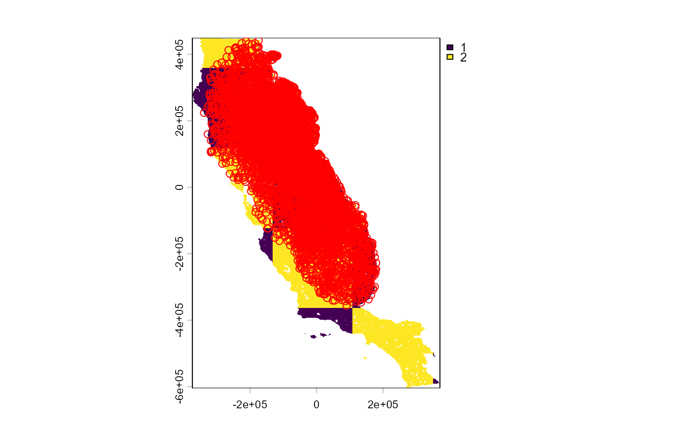
# Thickening background
spp_p # presences database of a species
#> # A tibble: 13 × 4
#> species x y pr_ab
#> <chr> <dbl> <dbl> <dbl>
#> 1 sp3 -26331. 209912. 1
#> 2 sp3 -134331. 195332. 1
#> 3 sp3 131079. -140548. 1
#> 4 sp3 -27411. 124322. 1
#> 5 sp3 106509. -83308. 1
#> 6 sp3 -86811. 259052. 1
#> 7 sp3 134049. -154588. 1
#> 8 sp3 -124881. 263372. 1
#> 9 sp3 -71151. 213152. 1
#> 10 sp3 2289. 9572. 1
#> 11 sp3 31989. 37922. 1
#> 12 sp3 -49551. 214232. 1
#> 13 sp3 -4461. 176702. 1
grid_env # The raster layer used for sampling background
#> class : SpatRaster
#> size : 558, 394, 1 (nrow, ncol, nlyr)
#> resolution : 1890, 1890 (x, y)
#> extent : -373685.8, 370974.2, -604813.3, 449806.7 (xmin, xmax, ymin, ymax)
#> coord. ref. : +proj=aea +lat_0=0 +lon_0=-120 +lat_1=34 +lat_2=40.5 +x_0=0 +y_0=-4000000 +datum=NAD83 +units=m +no_defs
#> source(s) : memory
#> varname : somevar
#> name : .part
#> min value : 1
#> max value : 2
bg <- sample_background(
data = spp_p,
x = "x",
y = "y",
n = 5000,
method = c("thickening", width = 150000),
rlayer = grid_env
)
plot(grid_env)
bg %>%
points(col = "red")
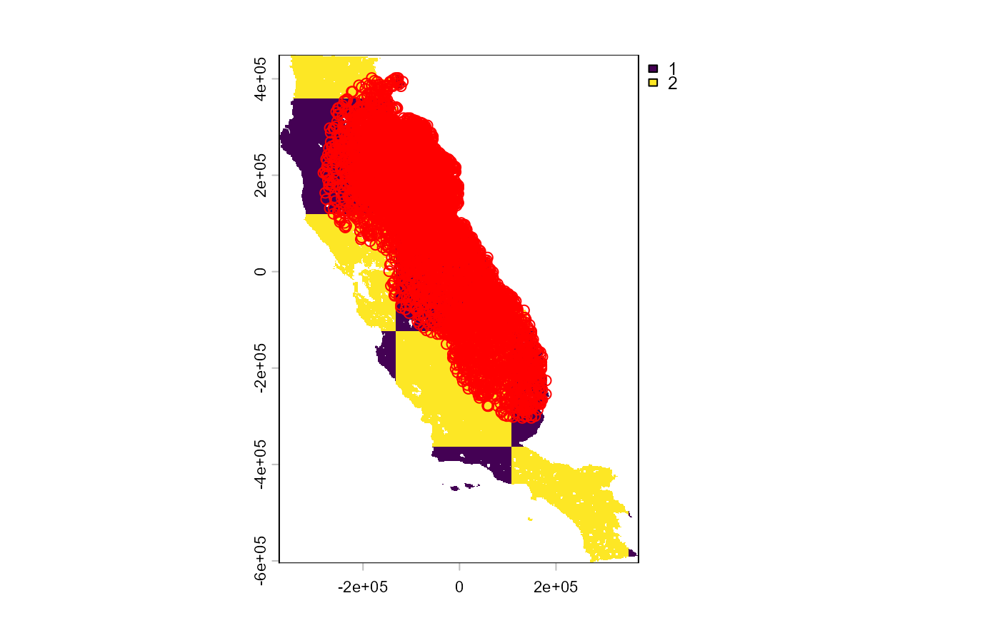
# Sample thickening background within a calibration area and constrained to a region
bg <- sample_background(
data = spp_p,
x = "x",
y = "y",
n = 3000,
method = "thickening",
rlayer = grid_env,
maskval = 2,
calibarea = ca_ps1
)
plot(grid_env)
plot(ca_ps1, add = TRUE)
bg %>%
points(col = "red", cex = 0.3)
points(spp_p[c("x", "y")], pch = 19)
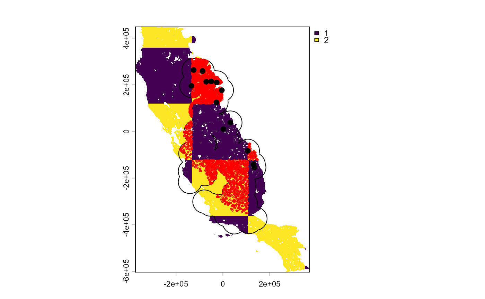
## %######################################################%##
# #
#### Biased background method ####
# #
## %######################################################%##
require(dplyr)
require(terra)
data(spp)
# Select the presences of a species
spp_p <- spp %>% dplyr::filter(species == "sp1", pr_ab == 1)
# Raster layer with density of points to obtain a biased sampling background
occ_density <- system.file("external/occ_density.tif", package = "flexsdm")
occ_density <- terra::rast(occ_density)
plot(occ_density)
points(spp_p %>% dplyr::select(x, y), cex = 0.5)
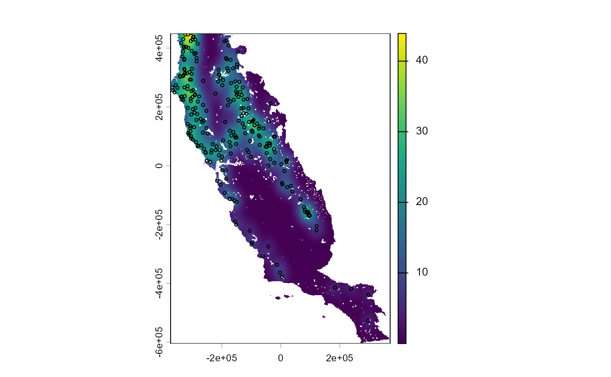
# A layer with region used to contrain background sampling area
regions <- system.file("external/regions.tif", package = "flexsdm")
regions <- terra::rast(regions)
plot(regions)
points(spp_p %>% dplyr::select(x, y), cex = 0.5)
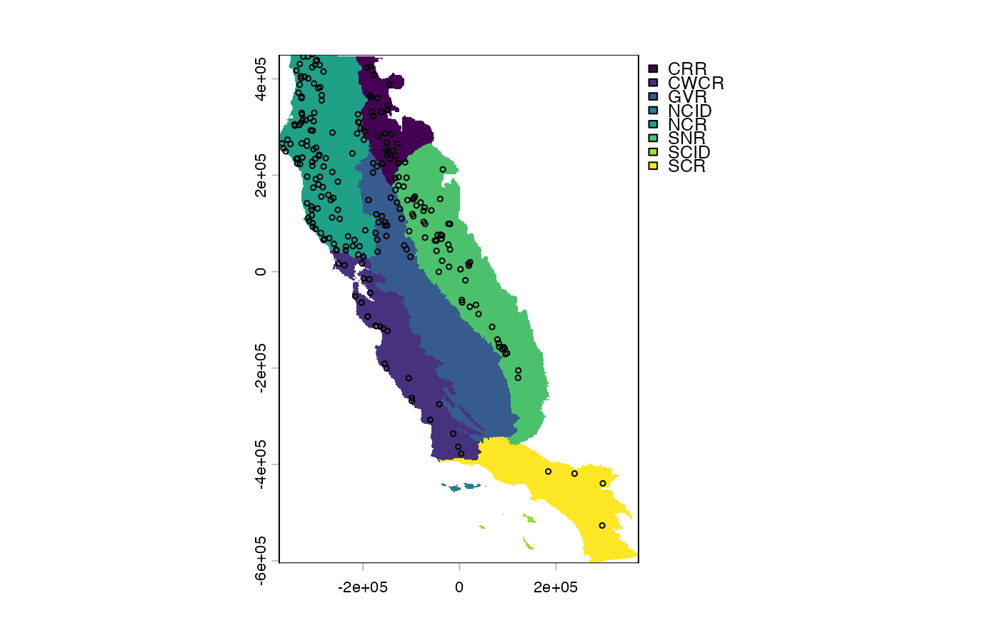
# Biased background points
spp_p # presences database of a species
#> # A tibble: 250 × 4
#> species x y pr_ab
#> <chr> <dbl> <dbl> <dbl>
#> 1 sp1 -269871. 69512. 1
#> 2 sp1 -149991. 267962. 1
#> 3 sp1 -126231. 196142. 1
#> 4 sp1 91659. -156748. 1
#> 5 sp1 -210471. 326282. 1
#> 6 sp1 -140541. 284972. 1
#> 7 sp1 -217491. 65732. 1
#> 8 sp1 -201831. 17132. 1
#> 9 sp1 -40101. 150782. 1
#> 10 sp1 -178611. 225032. 1
#> # ℹ 240 more rows
bg <- sample_background(
data = spp_p,
x = "x",
y = "y",
n = 3000,
method = "biased",
rlayer = regions,
rbias = occ_density
)
plot(occ_density)
bg %>%
points(col = "red", cex = 0.1)
spp_p %>%
dplyr::select(x, y) %>%
points(., col = "black", pch = 19, cex = 0.5)
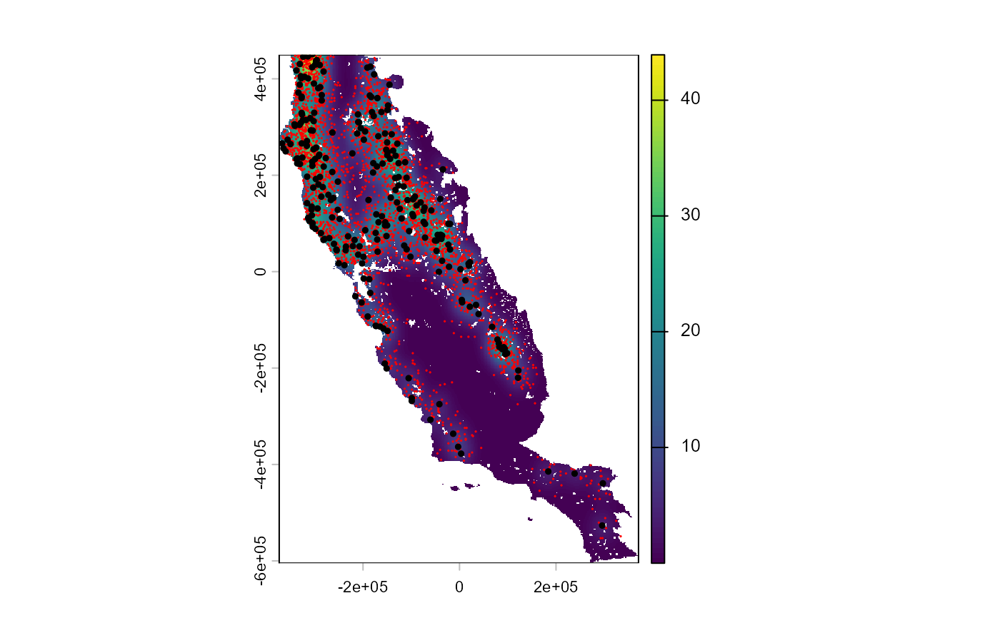
# Biased background points constrained to a region
# It will be selected region 6
plot(regions)
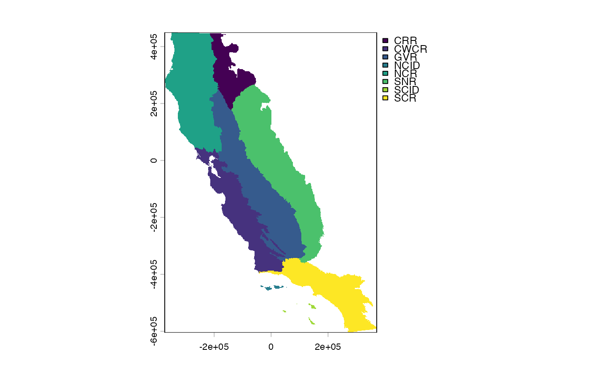
plot(regions %in% c(1, 6))
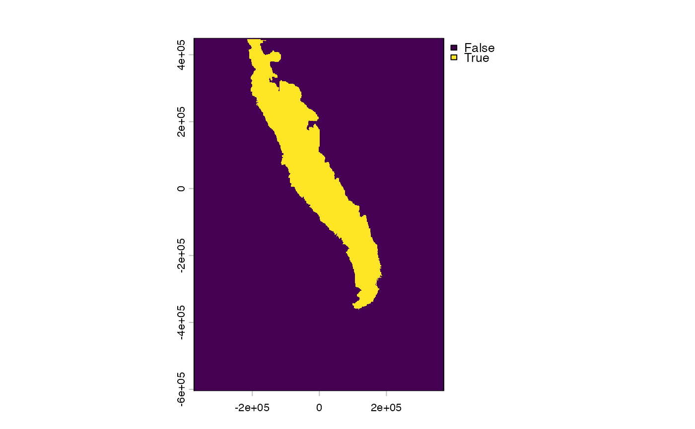
bg <- sample_background(
data = spp_p,
x = "x",
y = "y",
n = 500,
method = "biased",
rlayer = regions,
rbias = occ_density,
maskval = c(1, 2)
)
#> Number of background-points exceeds number of cell will be returned 0 background-points
plot(occ_density)
bg %>%
points(col = "red", cex = 0.5)
spp_p %>%
dplyr::select(x, y) %>%
points(., col = "black", pch = 19, cex = 0.5)
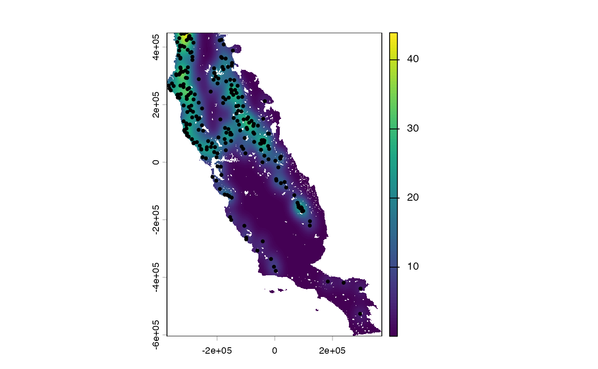
# }